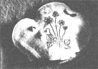

If you now operate, or have ever operated, a successful home business that was inspired by an article you read in MOTHER, tell us about it in around 500 words (write to Bootstrap Businesses, THE Mother Earth News 105 Stoney Mountain Road, Hendersonville, North Carolina 28791): Be sure to mention when and where you started your venture and with how much "seed money", what you make (net), and anything else that might be of assistance to other entrepreneurs. If your story is used in this column, you'll receive [1] the satisfaction of knowing that you may help someone else start a business and [2] a free two-year new or renewal subscription to THE Mother Earth News.
Reading about the one-person reupholstering venture run by Jan Worley?featured in the Bootstrap Businesses column on page 106 of MOTHER NO. 75?reminded me of the - furniture covering my parents did for a living ... and rekindled my own desire to work for myself. My mother also caned chairs, and as a child I learned both that skill and wicker furniture repair. After reading about Jan's entrepreneurship (and seeing other articles on home businesses in MOTHER), I decided to put my skills to work and start an enterprise of my own.
I initially invested $24 in business cards and spent about $50 on cane and other odds and ends (enough to do several chairs). In an average week, I clear $60 or more ... which, though not a great deal, certainly helps our household out. Better yet, my work-at-home enterprise leaves me time to be with my three young boys!
Sue Foster
Broken Arrow, Okla.
As an avid forager of edible mushrooms, I naturally paused, while thumbing through some old issues of THE Mother Earth News, to read "Fabulous Fungus Art" on page 154 of MOTHER NO. 59. It struck me that 1, too, could collect "artist's fungus" while I was on my food forays, etch them with attractive designs as described by Roger Bossley in the article, and sell these "living canvases" at art shows and craft fairs.
So, on my next excursion to the woods, I searched for the appropriate flat fungi (genus Fomes), which grow on trees and fenceposts in my area. (They're characterized by hardshelled tops and light, sporecovered, leathery undersides.) This was in the late fall, and the parasites I picked were quite dry.
I collected 15 of the most suitable mushrooms I could find and took them home. Then I drew pictures of birds and wildflowers on the undersurfaces of my "canvases" and took the creations to a local craft fair. There I easily sold the entire lot, making a $95 profit (after deducting the $10 fee for renting a space).
Encouraged by my success, I continued the enterprise ... but with an added touch: I now etch my designs into the mushrooms with a blunt darning needle and paint them with watercolors, to create even more lifelike portrayals of flowers and birds.
I also expanded my marketing efforts. In addition to working at craft fairs and art shows, I have placed my paintings on consignment in several local shops, where they sell well. No wonder: People are often surprised to find that the canvases are real mushrooms, and are impressed by this unique art medium.
It usually takes me about half an hour to outline a picture with my dulled needle, and another 15 minutes to add the colors. Working diligently, I can make as many as eight of my etchings in an evening. My prices for the objects vary with the size of the mushroom and the complexity of the design. For example, I charge $5.00 for a small piece, $7.50 for a medium-sized sketch, and $ 10 for a large "portrait"
' Since the cost of the watercolors used for each picture is negligible an d the mushrooms themselves are virtually free, my cash outlay for this business is limited mainly to what I spend for table or space rental at fairs and shows (which is never more than $15). It's not uncommon for me to take in $100 in one day at these events, leaving me with an $85 profit!
Nancy Pedersen
Brooklyn Park, Minn.
What do you do with an 800-pound mountain of cherry pits you were "forced" to take just to have a few handfuls of those stones for making a cherrystone bed-warmer? You clean, bag, and sell the enormous pile of leftovers as "Cherrystone BedWarmer Fixin's", of course!
Our business of selling "toe toaster" kits began last winter when my husband Jim and I were trying to stretch our firewood supply by letting our stove go out at night. While the idea of saving both trees and money gave us a warm glow of inner satisfaction, we also suffered some mighty cold feet. So after seeing Mary A. Piccard's article "Make A Cherrystone Bed-Warmer!" (issue 79, page 172), we decided to scrounge up a supply of the fruit seeds and construct our own heatholding sacks. We drove to a cherry processing plant that's only a few miles away from our homestead in the Northwest, and asked the people there to sell us a few pounds of the precious pits. Sell they would not, but they did say they would give us the stones ... as long as we took a truckful and loaded the seeds into our pickup ourselves.
Desperate as we were for warm feet, Jim and I never thought about what we would do with an entire truckload of uncleaned, pulpy, lyesmellirig cherry pits ... until later. We brought home our pits and dumped them in a heap by the path that leads to our cabin. Jim then set about washing, rubbing, rewashing, rerubbing, rinsing, draining, and-most difficult of alldrying about 15 pounds of the stones ... enough to make two dozen super-duper bedwarmers. We tested our toe toasters that night, and they did a great job of keeping the chill off.
But the following morning, as we looked at the pile of pits beside the path, cold reality hit us: Somehow we had to dispose of a veritable mountain of uncleaned seeds. In fact, we didn't even need all of the 24 bedwarmers we had made the evening before. Well, Jim went into town to see if he could sell our surplus seeds. Meanwhile, I'd just sat down to write some letters to friends in far-off places ... when it suddenly occurred to me that many a cold-footed person might not have ready access to cherrystones.
As soon as Jim returned, I told him we could package pits for bed-warming "kits", so we both pitched in and cleaned the remainder of the mound. Then, with $8.00 Jim had made by selling two of our readymade bed-warmers, we purchased plastic bags and labels. We filled each sack with a pound of stones and tagged it "Cherrystone Bed-Warmer Fixin's" . . . made up a little display ... and drove to the nearest large town to make the rounds of health food s hops and co-ops.
By simply showing the store owners or managers copies of MOTHER's article on bedwarmers-which many of those folks had already read-and displaying our seed sacks, we were able to sell all 240 of the packages we had brought along, for $1.50 each. That gave us a profit of about $350 (after deducting the cost of the labels and bags and the small amount of gas we used when we went to get the stones in the first place)! Jim and I almost felt guilty about making money so easily ... until we recalled how much labor we had put into cleaning the pits.
Several of the shops ordered more of our kits, but after filling those requests we still had a surfeit of seeds. So we sacked the remainder of our pits and took them with us on a trip to California, selling them along the way and bringing in enough money to raise the total income from our first shot at our newfound enterprise to $1,480.
Thanks to MOTHER, these days, life surely is one great big bowl of cherries!
Pam Callaway
Goldendale, Wash.
|
|
 |
|